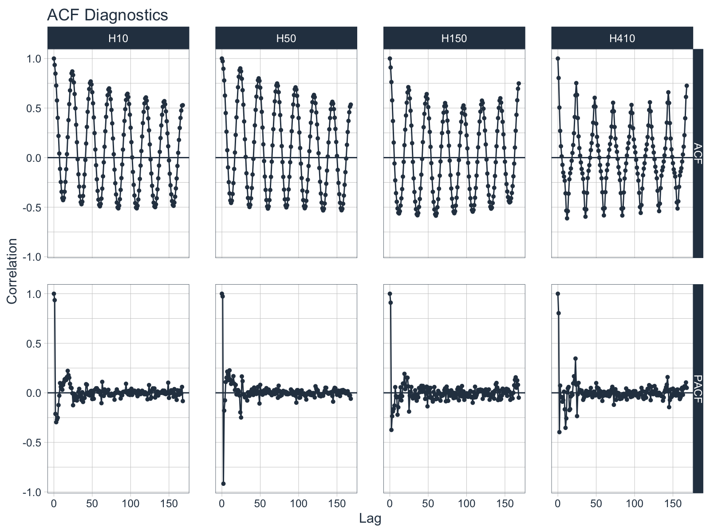
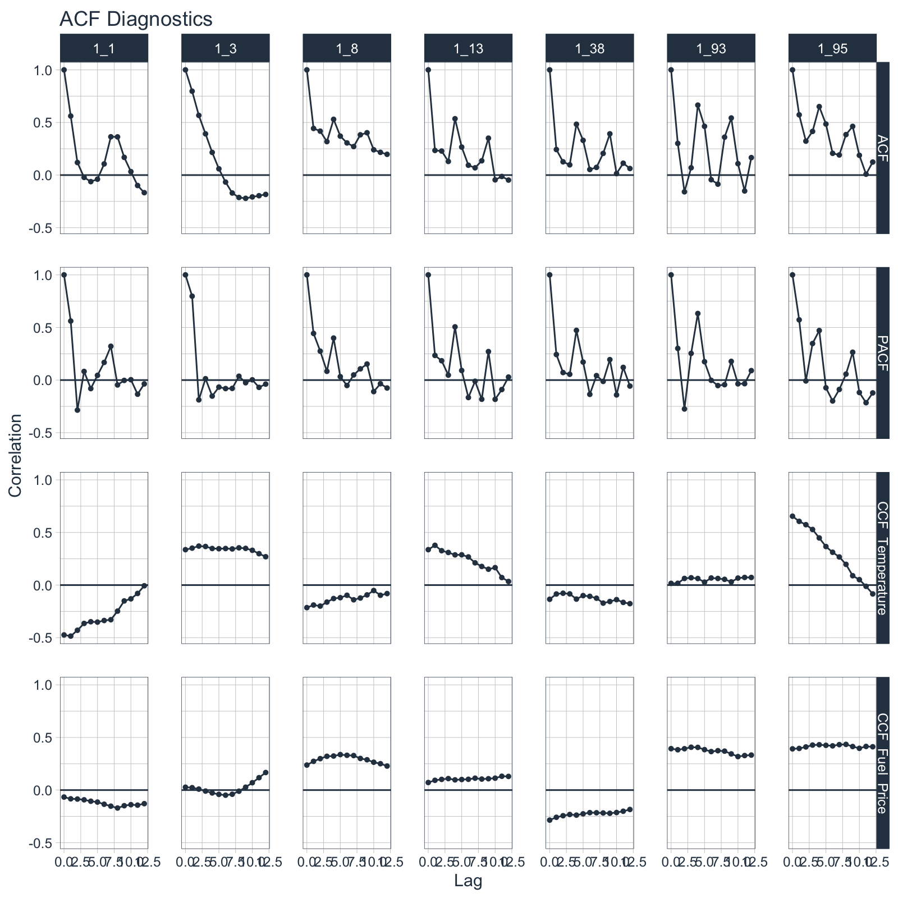
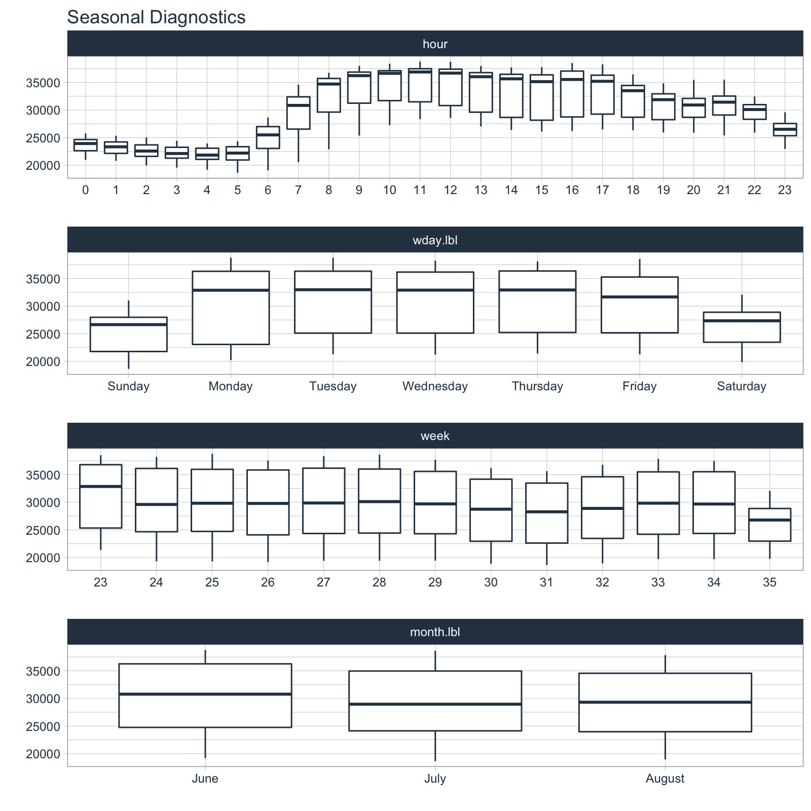
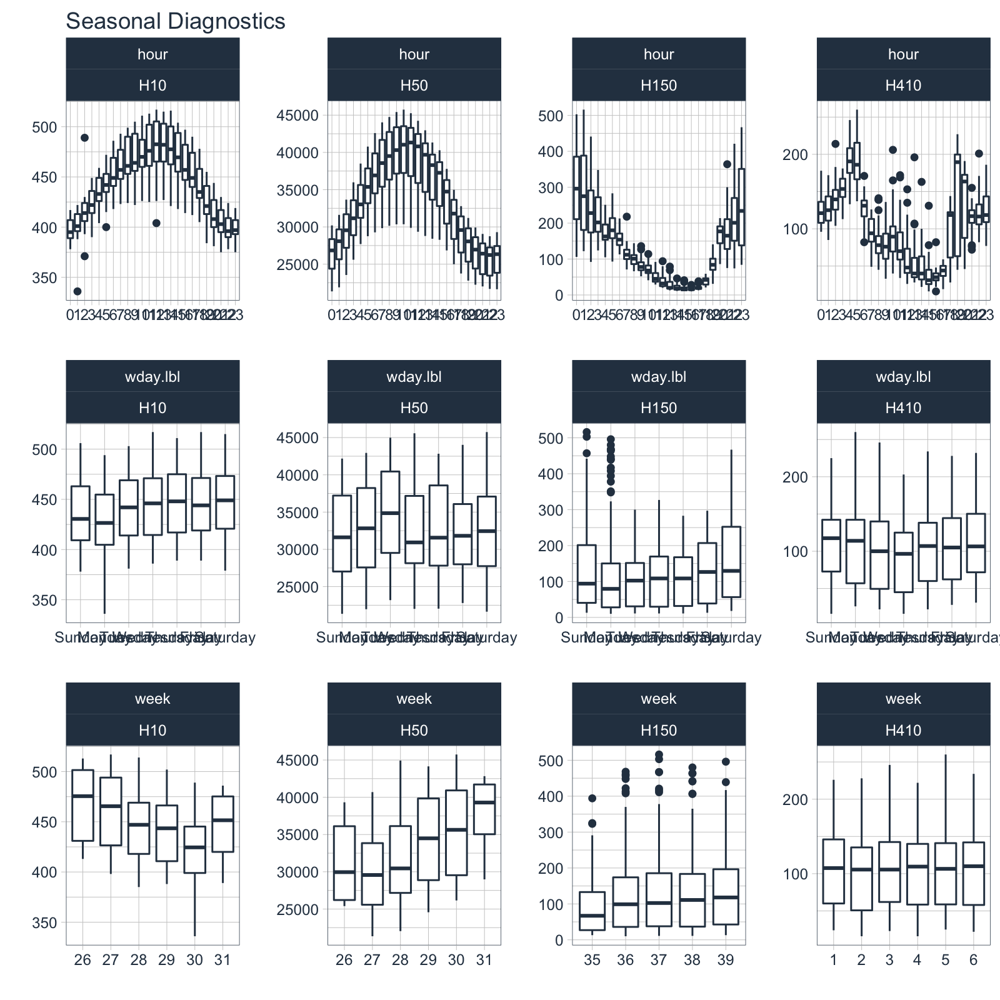
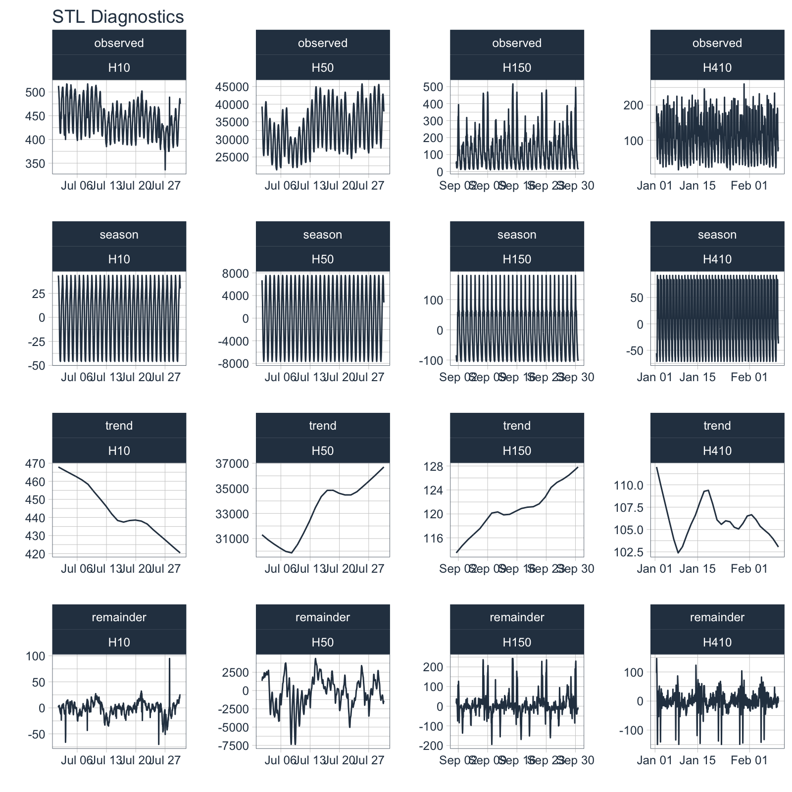

vignettes/TK05_Plotting_Seasonality_and_Correlation.Rmd
TK05_Plotting_Seasonality_and_Correlation.Rmdtimetk: A toolkit for time series analysis in the tidyverse
This tutorial focuses on 3 new functions for visualizing time series diagnostics:
plot_acf_diagnostics()
plot_seasonal_diagnostics()
plot_stl_diagnostics()
library(tidyverse) library(timetk) # Setup for the plotly charts # - If TRUE, returns interactive # - If FALSE, returns ggplot2 interactive <- FALSE
m4_hourly %>% group_by(id) %>% plot_acf_diagnostics( date, value, # ACF & PACF .lags = 0:(24*7), # 7-Days of hourly lags .interactive = interactive )

walmart_sales_weekly %>% select(id, Date, Weekly_Sales, Temperature, Fuel_Price) %>% group_by(id) %>% plot_acf_diagnostics( Date, Weekly_Sales, # ACF & PACF Temperature, Fuel_Price, # CCFs .lags = 0:(4*3), # 3 months of weekly lags .interactive = interactive )

taylor_30_min %>% plot_seasonal_diagnostics(date, value, .interactive = interactive)

m4_hourly %>% group_by(id) %>% plot_seasonal_diagnostics(date, value, .interactive = interactive)

m4_hourly %>% group_by(id) %>% plot_stl_diagnostics( date, value, .frequency = "auto", .trend = "auto", .feature_set = c("observed", "season", "trend", "remainder"), .interactive = interactive)
